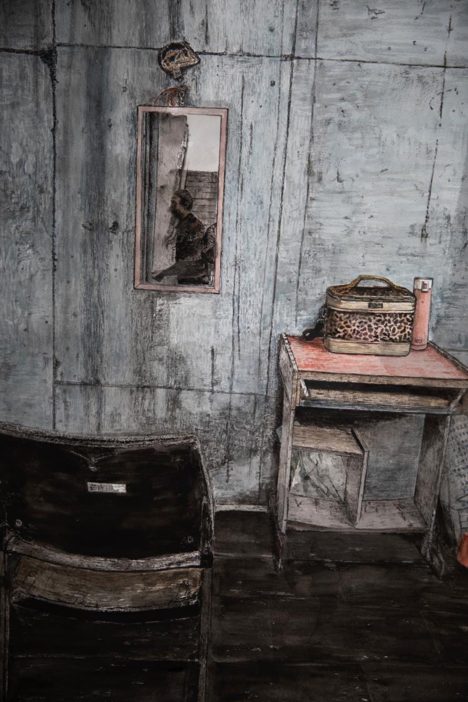

By the Street
街边

- Artwork ID / 作品编号
- KW-W-000044
- Year / 年份
- 2022
- Medium / 媒介
- Watercolor on paper / 纸本水彩
- Dimensions / 尺寸
- 76 × 53 cm (H × W / 高 × 宽)
About the work / 作品介绍
A modest roadside barbershop stands quietly by the street. A mirror, an old chair, a toolbox, and a thermos wait for the next customer. The figure reflected in the mirror appears only briefly, becoming part of the everyday scene rather than its focus. This painting pays tribute to the overlooked corners of urban life. Simple tools, familiar objects, and the marks left by time reveal the quiet dignity of ordinary work and everyday existence. Rather than telling a dramatic story, the work invites viewers to notice the warmth, resilience, and humanity embedded in the places people pass by each day.
街边一处简陋的理发摊，镜子、旧椅、工具箱与保温杯静静摆放，等待着下一位顾客。镜中的身影若隐若现，与周围的器物共同构成了一幅真实而平静的生活图景。 作品关注城市街巷中那些容易被忽略的日常空间。普通的谋生方式、熟悉的生活用品，以及岁月留下的痕迹，共同承载着人与城市之间的联系。画面没有刻意叙述情节，而是在宁静的氛围中展现平凡生活的温度与尊严，让日常景象成为值得驻足凝望的风景。